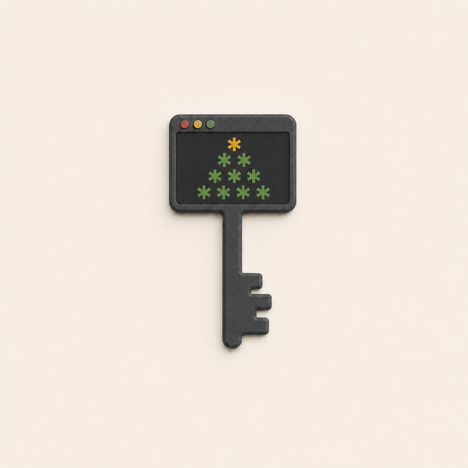
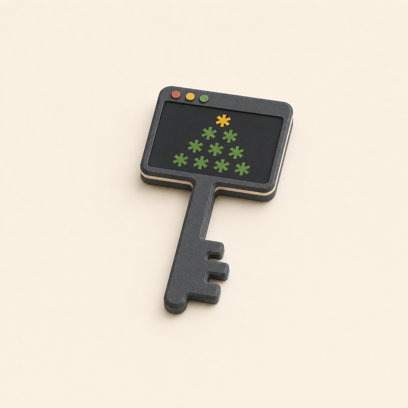
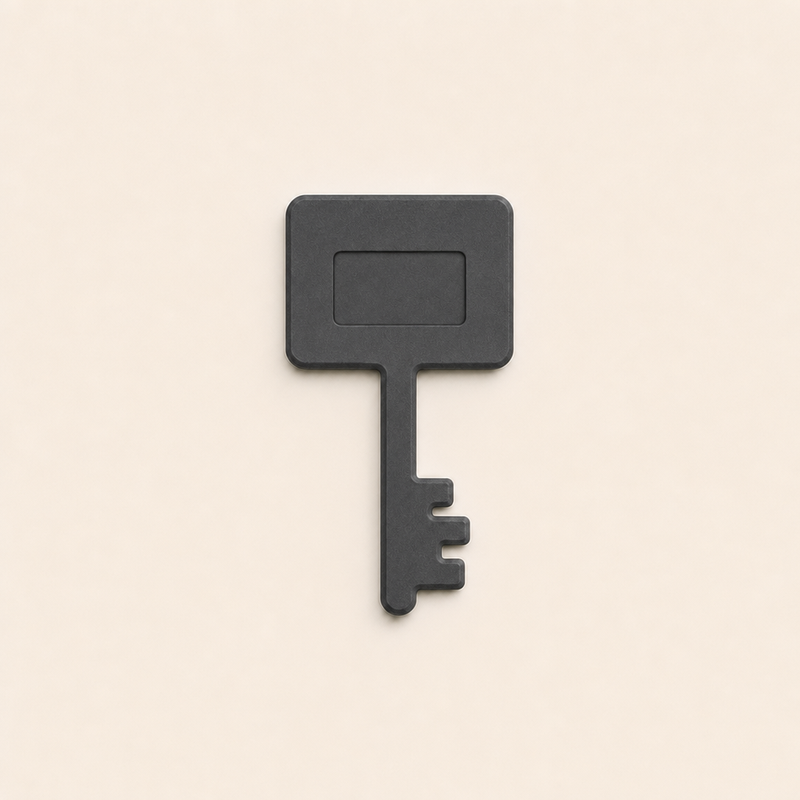
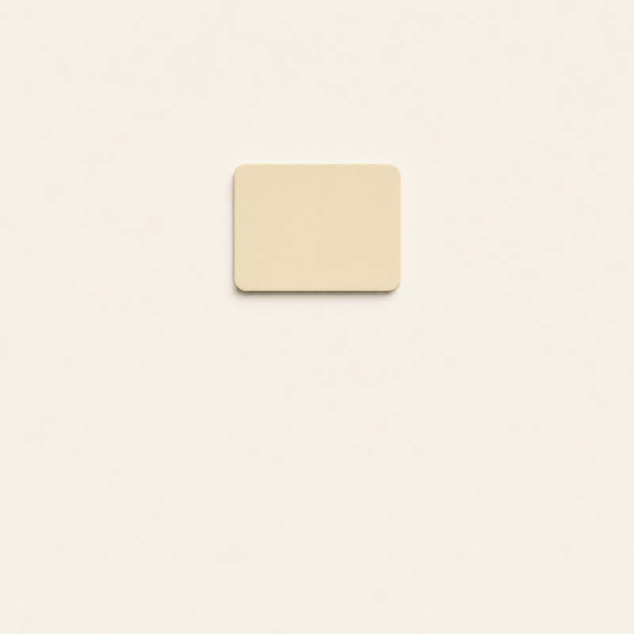
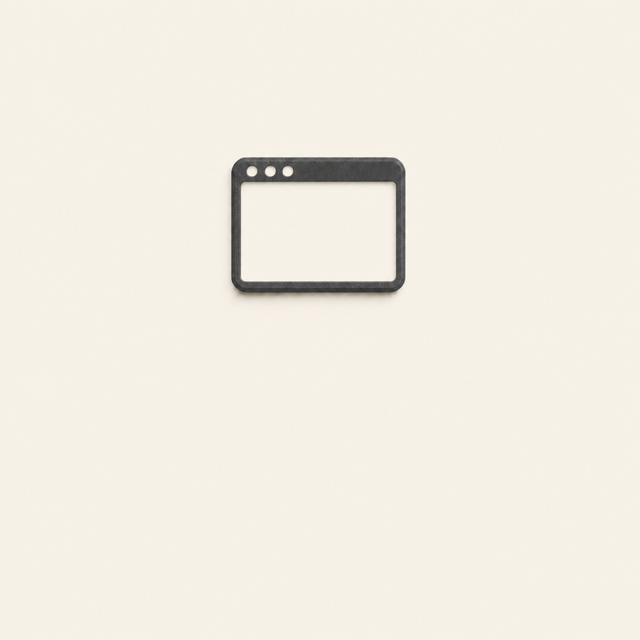
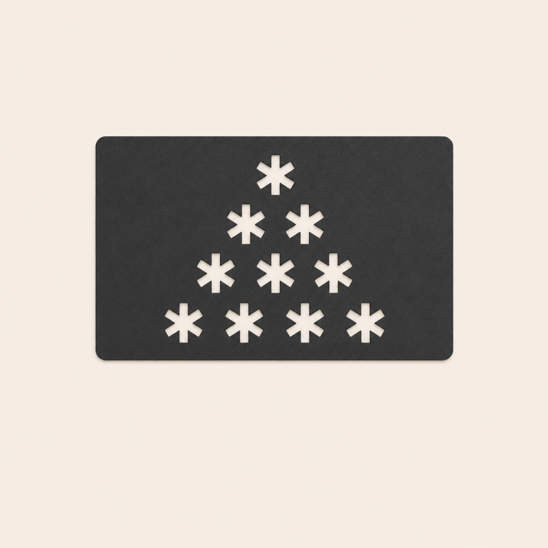
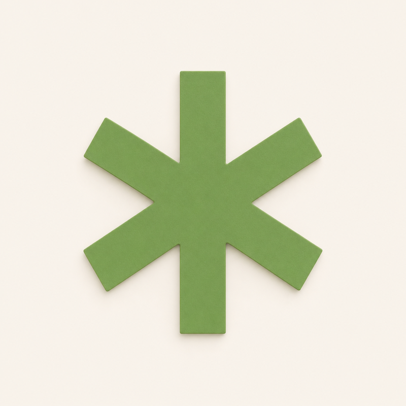
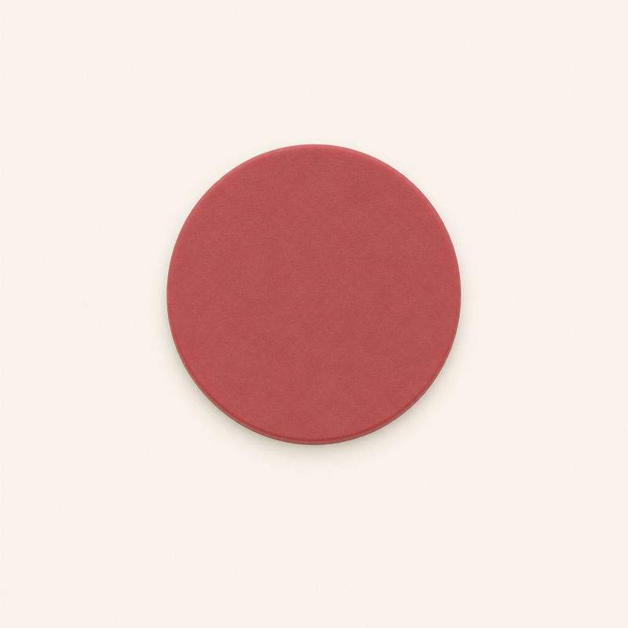

<title>ASCII Tree Key</title>
<link rel="stylesheet" href="https://fonts.googleapis.com/css2?family=IBM+Plex+Mono:wght@400;600&family=IBM+Plex+Sans:wght@400;500;600&display=swap">
<style>
/* Layout: one column, the assembly large, then the parts in a wrapping grid, then the notes. */
:root {
  --bg: #f3f1ec; --surface: #fbfaf7; --fg: #23262a; --muted: #5d6268;
  --line: #d9d5cc; --accent: #3f7f45; --gold: #b07a12;
  --mono: "IBM Plex Mono", ui-monospace, Menlo, Consolas, monospace;
  --sans: "IBM Plex Sans", system-ui, -apple-system, "Segoe UI", sans-serif;
}
@media (prefers-color-scheme: dark) { :root:not([data-theme="light"]) {
  --bg: #17191c; --surface: #202328; --fg: #e8e6e1; --muted: #a2a7ad;
  --line: #34383e; --accent: #7cc283; --gold: #e2b44f; color-scheme: dark } }
:root[data-theme="dark"] {
  --bg: #17191c; --surface: #202328; --fg: #e8e6e1; --muted: #a2a7ad;
  --line: #34383e; --accent: #7cc283; --gold: #e2b44f; color-scheme: dark }
body { background: var(--bg); color: var(--fg); font: 16px/1.55 var(--sans); padding-inline: 16px; padding-block: 28px 48px; }
main { max-width: 980px; margin: 0 auto; display: grid; gap: 36px; }
h1 { font: 600 clamp(26px, 5vw, 36px)/1.15 var(--mono); margin: 0; text-wrap: balance; letter-spacing: -0.01em; }
h1 .star { color: var(--gold); }
h2 { font: 600 13px/1.3 var(--mono); text-transform: uppercase; letter-spacing: 0.08em; color: var(--muted); margin: 0 0 12px; }
p { margin: 0; max-width: 65ch; }
.lede { color: var(--muted); margin-top: 8px; }
.hero { display: grid; grid-template-columns: 1fr 1fr; gap: 16px; }
.grid { display: grid; grid-template-columns: repeat(3, 1fr); gap: 16px; }
@media (max-width: 720px) { .hero { grid-template-columns: 1fr; } .grid { grid-template-columns: repeat(2, 1fr); } }
@media (max-width: 440px) { .grid { grid-template-columns: 1fr; } }
figure { margin: 0; display: grid; gap: 8px; min-width: 0; }
figure img { width: 100%; aspect-ratio: 1; object-fit: cover; border-radius: 6px; border: 1px solid var(--line); background: #f5f0e6; display: block; }
figcaption { font-size: 14px; color: var(--muted); }
figcaption b { color: var(--fg); font: 600 13px/1.4 var(--mono); display: block; }
.tag { font: 500 11px/1 var(--mono); text-transform: uppercase; letter-spacing: 0.08em; color: var(--accent); }
ul { margin: 0; padding-left: 20px; display: grid; gap: 8px; max-width: 70ch; }
.ask { background: var(--surface); border: 1px solid var(--line); border-radius: 8px; padding: 18px 20px; }
.ask p + p { margin-top: 6px; }
code { font: 14px var(--mono); }
</style>
<main>
  <header>
    <h1>ASCII Tree Key <span class="star">*</span></h1>
    <p class="lede">Bản 2: đầu chìa nhỏ lại, theo tỉ lệ icon terminal (5:4). Chìa 70.6 × 38 mm, dày 4 mm, sáu màu, chip NFC kín bên trong. Duyệt các ảnh này là duyệt bản sẽ in.</p>
  </header>

  <section>
    <h2>Cả chìa</h2>
    <div class="hero">
      <figure>
        
        <figcaption><b>ref-01 · cả chìa</b>Nhìn thẳng từ trên, thanh tiêu đề ở trên (−90, 90). Bản in được chấm theo ảnh này.</figcaption>
      </figure>
      <figure>
        
        <figcaption><span class="tag">Chỉ để xem</span><b>Trên bàn</b>Cho thấy sọc kem ở cạnh. Không dùng để in.</figcaption>
      </figure>
    </div>
  </section>

  <section>
    <h2>Các phần, mỗi hình dạng một ảnh</h2>
    <div class="grid">
      <figure>
        <figcaption><b>ref-02 · đế</b>1 chiếc. Lớp graphite dưới cùng, thân và răng chìa; hốc giữ chip NFC. Nhìn từ trên (−90, 90).</figcaption></figure>
      <figure>
        <figcaption><b>ref-03 · lớp kem</b>1 chiếc. Cạnh của nó là sọc kem, và nó đậy kín chip. Nhìn từ trên (−90, 90).</figcaption></figure>
      <figure>
        <figcaption><b>ref-04 · khung cửa sổ</b>1 chiếc. Lớp graphite trên cùng với thanh tiêu đề. Nhìn từ trên (−90, 90).</figcaption></figure>
      <figure>
        <figcaption><b>ref-05 · màn hình</b>1 chiếc. Màu đen, có mười lỗ hình dấu sao. Nhìn từ trên (−90, 90).</figcaption></figure>
      <figure>
        <figcaption><b>ref-06 · dấu sao</b>10 chiếc: 9 xanh, 1 vàng trên cùng, cùng cỡ. Không đổi so với bản 1. Nhìn từ trên (−90, 90).</figcaption></figure>
      <figure>
        <figcaption><b>ref-07 · chấm tiêu đề</b>3 chiếc: đỏ, vàng, xanh. Không đổi so với bản 1. Nhìn từ trên (−90, 90).</figcaption></figure>
    </div>
  </section>

  <section>
    <h2>Thay đổi so với bản 1</h2>
    <ul>
      <li>Đầu chìa từ 42 × 39 mm còn 38 × 30.4 mm, nằm ngang tỉ lệ 5:4 như icon terminal; thanh tiêu đề và viền mảnh hơn.</li>
      <li>Cây dấu sao nhỏ lại (mỗi dấu cao 4 mm). Đây là cỡ nhỏ nhất còn in rõ, nên đầu chìa không thể nhỏ hơn nữa nếu giữ cây 10 dấu.</li>
      <li>Thân và răng chìa nhỏ đi một chút cho cân. Cả chìa dài 70.6 mm, ngắn hơn chìa hiện tại khoảng 9 mm.</li>
    </ul>
  </section>

  <section>
    <h2>Chỗ bản in khác ảnh</h2>
    <ul>
      <li>Màn hình phẳng với khung, không lõm: tấm 4 mm chỉ đủ chỗ cho hốc chip, lớp kem và một lớp trên.</li>
      <li>Góc trong mỗi dấu sao bo 0.5 mm để phần đen giữa các nan in sạch. Ở cỡ này gần như không thấy.</li>
      <li>Sáu màu cần máy in có hai bộ AMS. Máy dừng một lần để đặt chip NFC.</li>
    </ul>
  </section>

  <section class="ask">
    <h2>Anh/chị quyết</h2>
    <p>Duyệt các ảnh này, hoặc cho biết cần đổi gì: hình dạng, kích thước, khoảng cách hay màu.</p>
    <p>Sau khi duyệt, tôi viết hợp đồng cuối và bắt đầu in.</p>
  </section>
</main>
